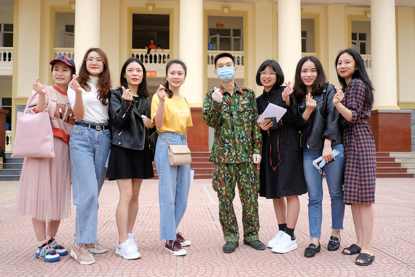

HÀ NỘI239 người Việt và 9 người Hàn Quốc bịn rịn rời khỏi khu cách ly tập trung, sáng 11/3. Trỡ Về Hết Cách Ly
248 người, trong đó có 9 công dân Hàn Quốc đã cách ly đủ 14 ngày, xét nghiệm âm tính, sức khỏe bình thường được rời trung tâm cách ly tại Trường quân sự đóng ở thị xã Sơn Tây.
Trong ba ngày, 25 đến 27/2, đơn vị này đã tiếp nhận 752 người, trong đó có 19 công dân Hàn Quốc về cách ly tại đây.
Cán bộ trung tâm trao giấy xác nhận đã hoàn thành đủ thời gian cách ly theo quy định, kèm hộ chiếu, giấy tờ tùy thân để người dân trở về nhà.
“Nơi mà khi khó khăn luôn giang rộng vòng tay chào đón, không bao giờ bỏ rơi chúng ta,
đó chính là Tổ quốc. Đất khách quê người, khó khăn, vấp ngã không thể thoát ra khỏi là khi
Tổ quốc giúp ta tìm ra con đường. 14 ngày trôi qua, có rất nhiều người đã cực nhọc chỉ để cho
chúng tôi vượt qua cuộc cách ly này. Khi chúng tôi ngủ thì bộ đội dậy chuẩn bị thức ăn, những
trưa nắng đẫm mồ hôi các chú vẫn bê cơm, bê nước. Tôi không biết phải làm gì ngoài thực hiện
cách ly cho tốt. Cảm ơn vì tất cả, Việt Nam. Hãy cùng nhau vượt qua dịch bệnh này”, Lê Thị Quỳnh
(áo đỏ) để lại những dòng lưu bút.
Cô gái quê Bắc Giang chia sẻ "có chút lưu luyến" khi kết thúc những ngày sống tập thể ở đây.
Du học sinh, người vừa học vừa làm chiếm phần lớn số người cách ly. Họ từ nhiều vùng của Hàn Quốc trở về Việt Nam hôm 26/2. Hạ cánh xuống sân bay Nội Bài, các công dân được xe đưa thẳng về Trường quân sự. Hai tuần cùng sinh hoạt, cùng kiểm tra y tế khiến họ có nhiều kỷ niệm trước khi rời xa.

Các cô gái phòng 402 chụp ảnh lưu niệm cùng chiến sĩ “anh nuôi” Trần Đức Thắng. Chiến sĩ được biên chế vào tổ phục vụ, hàng ngày dậy lúc 2h sáng để chuẩn bị bữa sáng, nhặt rau, nấu ăn ngày ba bữa cho người cách ly. Người Việt Nam được hỗ trợ mỗi ngày ăn trị giá 57.000 đồng, còn công dân Hàn Quốc được thành phố hỗ trợ 100.000 đồng một ngày.

Trấn thành củng có ảnh nói về covid-19
Em bé 7 tháng tuổi, con gái chị Nguyễn Thị Bình (quê Nghệ An) được bộ đội bế để mẹ cất hành lý lên xe. Để đủ chỗ sinh hoạt cho 752 người, Trường quân sự đã bố trí hai tòa nhà 5 tầng, tổng cộng 80 phòng ngủ và 10 phòng sinh hoạt chung. 200 chiến sĩ di chuyển sang khu nhà khác nhường chỗ cho người dân, đảm bảo điều kiện cách ly an toàn cho cả công dân lẫn bộ đội. “Anh em ở chật một chút cũng được, nhưng bà con cần được thoải mái", đại tá Nguyễn Mạnh Phú, Phó hiệu trưởng Trường quân sự nói.
Trường bố trí xe đưa người dân ra tận bến gần nhất để về nhà. Riêng 9 công dân Hàn Quốc được đưa về trụ sở Đại sứ quán Hàn Quốc ở quận Bắc Từ Liêm.